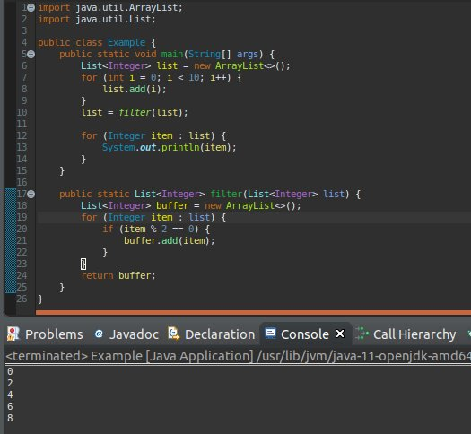
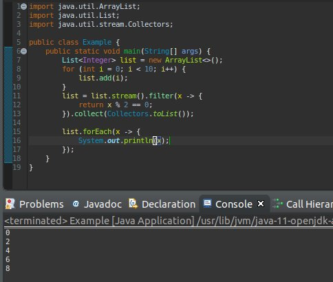
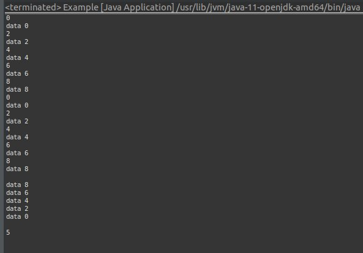
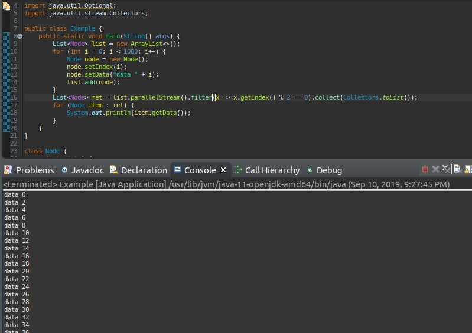

こんにちは。明月です。
このページはStreamフィルタ式に関して調べてみました。
以前、私が「I/O」に関して説明する時にStreamについて説明したことがありますね。
link - [Java スタディ - 21] IO(Input / Output)
意味としてはその時に同じですが、今回はListやMapにあるデータを「Stream」型に変わって検索、ソートなどをすることです。
説明が難しいですが、例で説明します。
import java.util.ArrayList;
import java.util.List;
public class Example {
public static void main(String[] args) {
List<Integer> list = new ArrayList<>();
for (int i = 0; i < 10; i++) {
list.add(i);
}
list = filter(list);
for (Integer item : list) {
System.out.println(item);
}
}
public static List<Integer> filter(List<Integer> list) {
List<Integer> buffer = new ArrayList<>();
for (Integer item : list) {
if (item % 2 == 0) {
buffer.add(item);
}
}
return buffer;
}
}

上の例をみれば、「list」に「0」から「9」までのデータを入れました。そのリストで私は偶数を抽出したいですね。
なので、「filter」関数を作って偶数を抽出して返却しました。なので上みたいなソースが実装されました。
でも、ただ「int」型のリストで抽出でも複雑ですね。ただ「int」系ではなく「class」タイプならどうかな。もっと複雑になりますね。
プログラミングでデータ抽出やソート処理がすごく多いですね。それを簡単に処理するような文法がStreamフィルタ式です。
import java.util.ArrayList;
import java.util.List;
import java.util.stream.Collectors;
public class Example {
public static void main(String[] args) {
List<Integer> list = new ArrayList<>();
for (int i = 0; i < 10; i++) {
list.add(i);
}
list = list.stream().filter(x -> {
// filterの内容は偶数が「true」になる。
return x % 2 == 0;
// 返却データはリストタイプにする。
}).collect(Collectors.toList());
//繰り返して出力します。
list.forEach(x -> {
System.out.println(x);
});
}
}

使用方法はリストの場合に「stream()」で変換します。「filter」関数で中はラムダ式ですね。形式はリターン値が「boolean」タイプでパラメータはリストの一つのデータが繰り返して出ます。
繰り返して出たデータでリターン値が「true」場合にStream式に残ります。「collect」関数で「list」タイプに変換して返却しますと意味ですね。
他の例です。
import java.util.ArrayList;
import java.util.List;
import java.util.Map;
import java.util.Optional;
import java.util.stream.Collectors;
public class Example {
public static void main(String[] args) {
List<Node> list = new ArrayList<>();
for (int i = 0; i < 10; i++) {
Node node = new Node();
node.setIndex(i);
node.setData("data " + i);
list.add(node);
}
// リストをマップ形式に変換して出力する。
Map<Integer, Node> map = list.stream().filter(x -> {
return x.getIndex() % 2 == 0;
}).collect(Collectors.toMap(Node::getIndex, x -> x));
for (int key : map.keySet()) {
System.out.println(key);
System.out.println(map.get(key).getData());
}
System.out.println();
// toMapの場合は重複データがある場合にエラーになる。重複データをリスト別でするようには「groupingBy」関数を利用する。
Map<Integer, List<Node>> map1 = list.stream().filter(x -> {
return x.getIndex() % 2 == 0;
}).collect(Collectors.groupingBy(x -> x.getIndex()));
for (int key : map1.keySet()) {
System.out.println(key);
for(Node node : map1.get(key)) {
System.out.println(node.getData());
}
}
// 配列に変換して出力する。
Object[] array = (Object[]) list.stream().filter(x -> {
return x.getIndex() % 2 == 0;
}).sorted((a, b) -> Integer.compare(a.getIndex(), b.getIndex()) * -1).toArray();
// 降順でリストを並ぶ。
for (Object item : array) {
System.out.println(((Node) item).getData());
}
System.out.println();
// 一つのデータを出力する。「Optional」のタイプで返却する。
// parallelStreamの場合は「パラレルループ」を使います。
Optional<Node> node = list.parallelStream().filter(x -> x.getIndex() == 5).findAny();
if(node.isPresent()) {
System.out.println(node.get().getIndex());
}
}
}
class Node {
private int index;
private String data;
public int getIndex() {
return index;
}
public void setIndex(int index) {
this.index = index;
}
public String getData() {
return data;
}
public void setData(String data) {
this.data = data;
}
}

上の例では３つの例を作成しました。
初めはリスト形式をマップ形式に変換しました。「collect」関数でパラメータは「キーになるデータを取得する関数名」と「キーによってなるデータ」でマップを作ります。
「toMap」の場合は一つのキーで一つのデータを作成することですが、もし重複キーがある場合あにはエラーになります。
その時には「groupingBy」関数を利用してマップを作れば、キーによってリストデータで紐付きます。
後、「toArray」を利用してリストを配列にも変換できますね。
最後は「findAny」や「findOne」関数がありますが、その関数は一つのデータを出力します。すなわち、フィルタで一つの結果を予想する時に使います。
でも、上の関数は「Optional」クラスに変換しますが、「Optional」関数は「null」などの検索結果が正しい可否をチェックするようなクラスですね。
例えば、「String」タイプならクラスタイプなので、問題ないですが、「int」や「double」の場合は「null」がないデータタイプなので、データタイプだけでは「null」チェックができないですね。
そのため、「Optional」クラスが存在することだと思えばよいです。
結果は「collect」や「finaAny」、「findOne」で結果をもらいます。
上の例を見れば「sorted」場合はリストの並びを設定できますね。上の場合は「* -1」を入れて降順に設定しましたが、「* -1」がなければ昇順でリストが並びますね。
並びのキーは「Node」の中で「index」によって設定しました。
「parallelStream」がありますが。「parallelStream」はループを一つのCPUではなく並列CPUを利用してフィルタを反映するように設定することですね。
大量データの場合は「parallelStream」が早いと思いますが、少ない場合はインタラプト設定で逆に遅くなります。
import java.util.ArrayList;
import java.util.List;
import java.util.stream.Collectors;
public class Example {
public static void main(String[] args) {
List<Node> list = new ArrayList<>();
for (int i = 0; i < 1000; i++) {
Node node = new Node();
node.setIndex(i);
node.setData("data " + i);
list.add(node);
}
List<Node> ret = list.parallelStream().filter(x -> x.getIndex() % 2 == 0).collect(Collectors.toList());
for (Node item : ret) {
System.out.println(item.getData());
}
}
}
class Node {
private int index;
private String data;
public int getIndex() {
return index;
}
public void setIndex(int index) {
this.index = index;
}
public String getData() {
return data;
}
public void setData(String data) {
this.data = data;
}
}

私の結果は別に問題なく出ましたが、パラレル処理する場合は結果が順番通りに出ない可能性もあります。パラレル処理する時には順番が関係ない、データ量が多いが早い結果を出せる時には良いと思いますね。
「Stream」の場合は「C#」の「Linq」の機能と似てます。参考してください。
link - [C# スタディ - 27] LINQ(リンク)-1
- [Javaスタディ- 52] Java servletでインスタンスを初期する方法2019/10/17 07:15:48
- [Javaスタディ- 51] Spring web frameworkで発生する文字化けのEncoding設定2019/10/16 07:32:55
- [Javaスタディ- 50] Web Spring frameworkでfilter設定2019/10/15 20:12:35
- [Javaスタディ- 49] Web serviceのweb.xmlでエラーページ設定2019/10/14 20:13:44
- [Javaスタディ- 48] JPAのDAOをFactoryパターンで管理する方法2019/10/13 22:55:52
- [Java スタディ - 47] JPAのSpring frameworkで依存性注入する方法2019/10/13 00:40:08
- [Java スタディ - 46] JPAでDAOを生成する方法2019/10/11 07:30:14
- [Java スタディ - 45] JPAでトランザクションの使用方法とオブサーバーパターンで共通トランザクション関数を作り方2019/10/10 07:29:43
- [Java スタディ - 44] JPAのQuery を作り方2019/10/09 07:34:08
- [Java スタディ - 43] JPAのEntityクラス設定(Cascade, fetch)2019/10/08 07:43:33
- [Java スタディ - 42] JPAでpersistance.xml設定とentityクラス設定(@GeneratedValue設定)2019/10/07 07:38:13
- [Java スタディ - 41] EclipseでJPAフレームワーク設定する方法2019/10/04 19:24:43
- [Java スタディ - 40] Web spring frameworkのJSPで使う言語 JSTL - XML2019/10/03 20:02:06
- [Java スタディ - 39] Web spring frameworkのJSPで使う言語 JSTL - 関数、データベース2019/10/02 21:00:22
- [Java スタディ - 38] Web spring frameworkのJSPで使う言語 JSTL - コアー、フォーマッティング2019/10/01 21:48:08
- [CSS] 属性選択子2019/12/06 07:27:36
- [CSS] 疑似クラス - only-child, only-of-type, empty, empty, root2019/12/05 07:29:15
- [CSS] 疑似クラス - first-child, last-child, first-of-type, last-of-type2019/12/04 07:28:37
- [CSS] 疑似クラス - nth-child, nth-of-type, nth-last-child, nth-last-of-type2019/12/03 07:21:20
- [CSS] 属性選択子2019/12/02 07:32:37
- [C#] Selector(選択子)2019/11/28 07:28:03
- [CSS] CSS Stylesとは？2019/11/27 07:30:30
- [HTML] Open graph(ogタグ)2019/11/26 07:42:20
- [HTML] Metaタグに関して(SEO最適化)2019/11/25 20:16:18
- [HTML] HTMLタグ構造2019/11/22 19:49:41
- [Ubuntu] PHPをインストール、Composer設定する方法2019/11/13 07:32:21
- [Ubuntu] テーマ(Arc)を変更する方法(tweak)2019/11/12 07:32:13
- [Ubuntu] Apache2をインストールする方法2019/11/11 07:28:28
- [Ubuntu] 「acquire the dpkg frontend lock」のエラーを解決方法2019/11/10 22:19:34
- [Ubuntu] JavaインストールとEclipseをインストールする方法2019/11/08 07:29:55